Extracting and visualizing tidy draws from brms models
Matthew Kay
2021-12-30
Source:vignettes/tidy-brms.Rmd
tidy-brms.RmdIntroduction
This vignette describes how to use the tidybayes and ggdist packages to extract and visualize tidy data frames of draws from posterior distributions of model variables, means, and predictions from brms::brm. For a more general introduction to tidybayes and its use on general-purpose Bayesian modeling languages (like Stan and JAGS), see vignette("tidybayes").
Setup
The following libraries are required to run this vignette:
library(magrittr)
library(dplyr)
library(purrr)
library(forcats)
library(tidyr)
library(modelr)
library(ggdist)
library(tidybayes)
library(ggplot2)
library(cowplot)
library(rstan)
library(brms)
library(ggrepel)
library(RColorBrewer)
library(gganimate)
library(posterior)
theme_set(theme_tidybayes() + panel_border())These options help Stan run faster:
rstan_options(auto_write = TRUE)
options(mc.cores = parallel::detectCores())Example dataset
To demonstrate tidybayes, we will use a simple dataset with 10 observations from 5 conditions each:
set.seed(5)
n = 10
n_condition = 5
ABC =
tibble(
condition = rep(c("A","B","C","D","E"), n),
response = rnorm(n * 5, c(0,1,2,1,-1), 0.5)
)A snapshot of the data looks like this:
head(ABC, 10)## # A tibble: 10 x 2
## condition response
## <chr> <dbl>
## 1 A -0.420
## 2 B 1.69
## 3 C 1.37
## 4 D 1.04
## 5 E -0.144
## 6 A -0.301
## 7 B 0.764
## 8 C 1.68
## 9 D 0.857
## 10 E -0.931This is a typical tidy format data frame: one observation per row. Graphically:
ABC %>%
ggplot(aes(y = condition, x = response)) +
geom_point()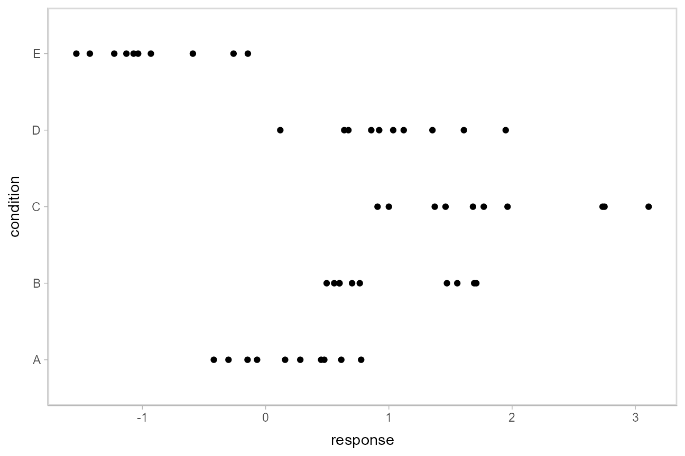
Model
Let’s fit a hierarchical model with shrinkage towards a global mean:
m = brm(
response ~ (1|condition),
data = ABC,
prior = c(
prior(normal(0, 1), class = Intercept),
prior(student_t(3, 0, 1), class = sd),
prior(student_t(3, 0, 1), class = sigma)
),
control = list(adapt_delta = .99),
file = "models/tidy-brms_m.rds" # cache model (can be removed)
)The results look like this:
m## Family: gaussian
## Links: mu = identity; sigma = identity
## Formula: response ~ (1 | condition)
## Data: ABC (Number of observations: 50)
## Draws: 4 chains, each with iter = 2000; warmup = 1000; thin = 1;
## total post-warmup draws = 4000
##
## Group-Level Effects:
## ~condition (Number of levels: 5)
## Estimate Est.Error l-95% CI u-95% CI Rhat Bulk_ESS Tail_ESS
## sd(Intercept) 1.17 0.43 0.60 2.22 1.00 944 1542
##
## Population-Level Effects:
## Estimate Est.Error l-95% CI u-95% CI Rhat Bulk_ESS Tail_ESS
## Intercept 0.50 0.48 -0.49 1.41 1.00 904 1204
##
## Family Specific Parameters:
## Estimate Est.Error l-95% CI u-95% CI Rhat Bulk_ESS Tail_ESS
## sigma 0.56 0.06 0.46 0.70 1.00 2057 2243
##
## Draws were sampled using sampling(NUTS). For each parameter, Bulk_ESS
## and Tail_ESS are effective sample size measures, and Rhat is the potential
## scale reduction factor on split chains (at convergence, Rhat = 1).Extracting draws from a fit in tidy-format using spread_draws
Now that we have our results, the fun begins: getting the draws out in a tidy format! First, we’ll use the get_variables() function to get a list of raw model variable names so that we know what variables we can extract from the model:
## [1] "b_Intercept" "sd_condition__Intercept" "sigma" "r_condition[A,Intercept]"
## [5] "r_condition[B,Intercept]" "r_condition[C,Intercept]" "r_condition[D,Intercept]" "r_condition[E,Intercept]"
## [9] "lp__" "accept_stat__" "stepsize__" "treedepth__"
## [13] "n_leapfrog__" "divergent__" "energy__"Here, b_Intercept is the global mean, and the r_condition[] variables are offsets from that mean for each condition. Given these variables:
r_condition[A,Intercept]r_condition[B,Intercept]r_condition[C,Intercept]r_condition[D,Intercept]r_condition[E,Intercept]
We might want a data frame where each row is a draw from either r_condition[A,Intercept], r_condition[B,Intercept], ...[C,...], ...[D,...], or ...[E,...], and where we have columns indexing which chain/iteration/draw the row came from and which condition (A to E) it is for. That would allow us to easily compute quantities grouped by condition, or generate plots by condition using ggplot, or even merge draws with the original data to plot data and posteriors simultaneously.
The workhorse of tidybayes is the spread_draws() function, which does this extraction for us. It includes a simple specification format that we can use to extract variables and their indices into tidy-format data frames.
Gathering variable indices into a separate column in a tidy format data frame
Given a variable in the model like this:
r_condition[D,Intercept]
We can provide spread_draws() with a column specification like this:
r_condition[condition,term]
Where condition corresponds to D and term corresponds to Intercept. There is nothing too magical about what spread_draws() does with this specification: under the hood, it splits the variable indices by commas and spaces (you can split by other characters by changing the sep argument). It lets you assign columns to the resulting indices in order. So r_condition[D,Intercept] has indices D and Intercept, and spread_draws() lets us extract these indices as columns in the resulting tidy data frame of draws from r_condition:
m %>%
spread_draws(r_condition[condition,term]) %>%
head(10)## # A tibble: 10 x 6
## # Groups: condition, term [1]
## condition term r_condition .chain .iteration .draw
## <chr> <chr> <dbl> <int> <int> <int>
## 1 A Intercept 0.683 1 1 1
## 2 A Intercept -0.779 1 2 2
## 3 A Intercept -0.580 1 3 3
## 4 A Intercept -0.717 1 4 4
## 5 A Intercept -0.786 1 5 5
## 6 A Intercept -0.818 1 6 6
## 7 A Intercept -0.456 1 7 7
## 8 A Intercept -0.248 1 8 8
## 9 A Intercept 0.0870 1 9 9
## 10 A Intercept -0.0983 1 10 10We can choose whatever names we want for the index columns; e.g.:
m %>%
spread_draws(r_condition[c,t]) %>%
head(10)## # A tibble: 10 x 6
## # Groups: c, t [1]
## c t r_condition .chain .iteration .draw
## <chr> <chr> <dbl> <int> <int> <int>
## 1 A Intercept 0.683 1 1 1
## 2 A Intercept -0.779 1 2 2
## 3 A Intercept -0.580 1 3 3
## 4 A Intercept -0.717 1 4 4
## 5 A Intercept -0.786 1 5 5
## 6 A Intercept -0.818 1 6 6
## 7 A Intercept -0.456 1 7 7
## 8 A Intercept -0.248 1 8 8
## 9 A Intercept 0.0870 1 9 9
## 10 A Intercept -0.0983 1 10 10But the more descriptive and less cryptic names from the previous example are probably preferable.
In this particular model, there is only one term (Intercept), thus we could omit that index altogether to just get each condition and the value of r_condition for that condition:
m %>%
spread_draws(r_condition[condition,]) %>%
head(10)## # A tibble: 10 x 5
## # Groups: condition [1]
## condition r_condition .chain .iteration .draw
## <chr> <dbl> <int> <int> <int>
## 1 A 0.683 1 1 1
## 2 A -0.779 1 2 2
## 3 A -0.580 1 3 3
## 4 A -0.717 1 4 4
## 5 A -0.786 1 5 5
## 6 A -0.818 1 6 6
## 7 A -0.456 1 7 7
## 8 A -0.248 1 8 8
## 9 A 0.0870 1 9 9
## 10 A -0.0983 1 10 10Note: If you have used spread_draws() with a raw sample from Stan or JAGS, you may be used to using recover_types before spread_draws() to get index column values back (e.g. if the index was a factor). This is not necessary when using spread_draws() on rstanarm models, because those models already contain that information in their variable names. For more on recover_types, see vignette("tidybayes").
Point summaries and intervals
With simple model variables
tidybayes provides a family of functions for generating point summaries and intervals from draws in a tidy format. These functions follow the naming scheme [median|mean|mode]_[qi|hdi], for example, median_qi(), mean_qi(), mode_hdi(), and so on. The first name (before the _) indicates the type of point summary, and the second name indicates the type of interval. qi yields a quantile interval (a.k.a. equi-tailed interval, central interval, or percentile interval) and hdi yields a highest (posterior) density interval. Custom point summary or interval functions can also be applied using the point_interval() function.
For example, we might extract the draws corresponding to posterior distributions of the overall mean and standard deviation of observations:
m %>%
spread_draws(b_Intercept, sigma) %>%
head(10)## # A tibble: 10 x 5
## .chain .iteration .draw b_Intercept sigma
## <int> <int> <int> <dbl> <dbl>
## 1 1 1 1 -0.277 0.567
## 2 1 2 2 0.892 0.562
## 3 1 3 3 0.941 0.554
## 4 1 4 4 0.999 0.553
## 5 1 5 5 1.04 0.544
## 6 1 6 6 1.41 0.580
## 7 1 7 7 0.333 0.551
## 8 1 8 8 0.562 0.536
## 9 1 9 9 0.177 0.544
## 10 1 10 10 0.324 0.498Like with r_condition[condition,term], this gives us a tidy data frame. If we want the median and 95% quantile interval of the variables, we can apply median_qi():
m %>%
spread_draws(b_Intercept, sigma) %>%
median_qi(b_Intercept, sigma)## # A tibble: 1 x 9
## b_Intercept b_Intercept.lower b_Intercept.upper sigma sigma.lower sigma.upper .width .point .interval
## <dbl> <dbl> <dbl> <dbl> <dbl> <dbl> <dbl> <chr> <chr>
## 1 0.526 -0.490 1.41 0.557 0.456 0.696 0.95 median qiWe can specify the columns we want to get medians and intervals from, as above, or if we omit the list of columns, median_qi() will use every column that is not a grouping column or a special column (like .chain, .iteration, or .draw). Thus in the above example, b_Intercept and sigma are redundant arguments to median_qi() because they are also the only columns we gathered from the model. So we can simplify this to:
m %>%
spread_draws(b_Intercept, sigma) %>%
median_qi()## # A tibble: 1 x 9
## b_Intercept b_Intercept.lower b_Intercept.upper sigma sigma.lower sigma.upper .width .point .interval
## <dbl> <dbl> <dbl> <dbl> <dbl> <dbl> <dbl> <chr> <chr>
## 1 0.526 -0.490 1.41 0.557 0.456 0.696 0.95 median qiIf you would rather have a long-format list of intervals, use gather_draws() instead:
m %>%
gather_draws(b_Intercept, sigma) %>%
median_qi()## # A tibble: 2 x 7
## .variable .value .lower .upper .width .point .interval
## <chr> <dbl> <dbl> <dbl> <dbl> <chr> <chr>
## 1 b_Intercept 0.526 -0.490 1.41 0.95 median qi
## 2 sigma 0.557 0.456 0.696 0.95 median qiFor more on gather_draws(), see vignette("tidybayes").
With indexed model variables
When we have a model variable with one or more indices, such as r_condition, we can apply median_qi() (or other functions in the point_interval() family) as we did before:
m %>%
spread_draws(r_condition[condition,]) %>%
median_qi()## # A tibble: 5 x 7
## condition r_condition .lower .upper .width .point .interval
## <chr> <dbl> <dbl> <dbl> <dbl> <chr> <chr>
## 1 A -0.336 -1.23 0.734 0.95 median qi
## 2 B 0.480 -0.441 1.54 0.95 median qi
## 3 C 1.32 0.406 2.38 0.95 median qi
## 4 D 0.498 -0.443 1.55 0.95 median qi
## 5 E -1.40 -2.36 -0.396 0.95 median qiHow did median_qi() know what to aggregate? Data frames returned by spread_draws() are automatically grouped by all index variables you pass to it; in this case, that means spread_draws() groups its results by condition. median_qi() respects those groups, and calculates the point summaries and intervals within all groups. Then, because no columns were passed to median_qi(), it acts on the only non-special (.-prefixed) and non-group column, r_condition. So the above shortened syntax is equivalent to this more verbose call:
m %>%
spread_draws(r_condition[condition,]) %>%
group_by(condition) %>% # this line not necessary (done by spread_draws)
median_qi(r_condition) # b is not necessary (it is the only non-group column)## # A tibble: 5 x 7
## condition r_condition .lower .upper .width .point .interval
## <chr> <dbl> <dbl> <dbl> <dbl> <chr> <chr>
## 1 A -0.336 -1.23 0.734 0.95 median qi
## 2 B 0.480 -0.441 1.54 0.95 median qi
## 3 C 1.32 0.406 2.38 0.95 median qi
## 4 D 0.498 -0.443 1.55 0.95 median qi
## 5 E -1.40 -2.36 -0.396 0.95 median qitidybayes also provides an implementation of posterior::summarise_draws() for grouped data frames (tidybayes::summaries_draws.grouped_df()), which you can use to quickly get convergence diagnostics:
m %>%
spread_draws(r_condition[condition,]) %>%
summarise_draws()## # A tibble: 5 x 11
## # Groups: condition [5]
## condition variable mean median sd mad q5 q95 rhat ess_bulk ess_tail
## <chr> <chr> <dbl> <dbl> <dbl> <dbl> <dbl> <dbl> <dbl> <dbl> <dbl>
## 1 A r_condition -0.312 -0.336 0.498 0.480 -1.08 0.526 1.00 972. 1267.
## 2 B r_condition 0.493 0.480 0.500 0.474 -0.301 1.34 1.00 983. 1326.
## 3 C r_condition 1.33 1.32 0.501 0.478 0.557 2.19 1.00 994. 1489.
## 4 D r_condition 0.512 0.498 0.502 0.477 -0.277 1.36 1.00 1013. 1396.
## 5 E r_condition -1.39 -1.40 0.500 0.468 -2.17 -0.535 1.00 990. 1392.Combining variables with different indices in a single tidy format data frame
spread_draws() and gather_draws() support extracting variables that have different indices into the same data frame. Indices with the same name are automatically matched up, and values are duplicated as necessary to produce one row per all combination of levels of all indices. For example, we might want to calculate the mean within each condition (call this condition_mean). In this model, that mean is the intercept (b_Intercept) plus the effect for a given condition (r_condition).
We can gather draws from b_Intercept and r_condition together in a single data frame:
m %>%
spread_draws(b_Intercept, r_condition[condition,]) %>%
head(10)## # A tibble: 10 x 6
## # Groups: condition [5]
## .chain .iteration .draw b_Intercept condition r_condition
## <int> <int> <int> <dbl> <chr> <dbl>
## 1 1 1 1 -0.277 A 0.683
## 2 1 1 1 -0.277 B 1.16
## 3 1 1 1 -0.277 C 2.18
## 4 1 1 1 -0.277 D 1.06
## 5 1 1 1 -0.277 E -0.396
## 6 1 2 2 0.892 A -0.779
## 7 1 2 2 0.892 B -0.0145
## 8 1 2 2 0.892 C 0.803
## 9 1 2 2 0.892 D 0.221
## 10 1 2 2 0.892 E -1.58Within each draw, b_Intercept is repeated as necessary to correspond to every index of r_condition. Thus, the mutate function from dplyr can be used to find their sum, condition_mean (which is the mean for each condition):
m %>%
spread_draws(`b_Intercept`, r_condition[condition,]) %>%
mutate(condition_mean = b_Intercept + r_condition) %>%
median_qi(condition_mean)## # A tibble: 5 x 7
## condition condition_mean .lower .upper .width .point .interval
## <chr> <dbl> <dbl> <dbl> <dbl> <chr> <chr>
## 1 A 0.190 -0.146 0.536 0.95 median qi
## 2 B 0.998 0.640 1.33 0.95 median qi
## 3 C 1.84 1.49 2.18 0.95 median qi
## 4 D 1.02 0.670 1.36 0.95 median qi
## 5 E -0.884 -1.24 -0.528 0.95 median qimedian_qi() uses tidy evaluation (see vignette("tidy-evaluation", package = "rlang")), so it can take column expressions, not just column names. Thus, we can simplify the above example by moving the calculation of condition_mean from mutate into median_qi():
m %>%
spread_draws(b_Intercept, r_condition[condition,]) %>%
median_qi(condition_mean = b_Intercept + r_condition)## # A tibble: 5 x 7
## condition condition_mean .lower .upper .width .point .interval
## <chr> <dbl> <dbl> <dbl> <dbl> <chr> <chr>
## 1 A 0.190 -0.146 0.536 0.95 median qi
## 2 B 0.998 0.640 1.33 0.95 median qi
## 3 C 1.84 1.49 2.18 0.95 median qi
## 4 D 1.02 0.670 1.36 0.95 median qi
## 5 E -0.884 -1.24 -0.528 0.95 median qiPlotting intervals with multiple probability levels
median_qi() and its sister functions can produce an arbitrary number of probability intervals by setting the .width = argument:
m %>%
spread_draws(b_Intercept, r_condition[condition,]) %>%
median_qi(condition_mean = b_Intercept + r_condition, .width = c(.95, .8, .5))## # A tibble: 15 x 7
## condition condition_mean .lower .upper .width .point .interval
## <chr> <dbl> <dbl> <dbl> <dbl> <chr> <chr>
## 1 A 0.190 -0.146 0.536 0.95 median qi
## 2 B 0.998 0.640 1.33 0.95 median qi
## 3 C 1.84 1.49 2.18 0.95 median qi
## 4 D 1.02 0.670 1.36 0.95 median qi
## 5 E -0.884 -1.24 -0.528 0.95 median qi
## 6 A 0.190 -0.0340 0.421 0.8 median qi
## 7 B 0.998 0.766 1.22 0.8 median qi
## 8 C 1.84 1.61 2.06 0.8 median qi
## 9 D 1.02 0.786 1.24 0.8 median qi
## 10 E -0.884 -1.11 -0.656 0.8 median qi
## 11 A 0.190 0.0778 0.307 0.5 median qi
## 12 B 0.998 0.881 1.11 0.5 median qi
## 13 C 1.84 1.72 1.95 0.5 median qi
## 14 D 1.02 0.898 1.13 0.5 median qi
## 15 E -0.884 -1.01 -0.767 0.5 median qiThe results are in a tidy format: one row per group and uncertainty interval width (.width). This facilitates plotting. For example, assigning -.width to the size aesthetic will show all intervals, making thicker lines correspond to smaller intervals. The ggdist::geom_pointinterval() geom automatically sets the size aesthetic appropriately based on the .width column in the data to produce plots of points with multiple probability levels:
m %>%
spread_draws(b_Intercept, r_condition[condition,]) %>%
median_qi(condition_mean = b_Intercept + r_condition, .width = c(.95, .66)) %>%
ggplot(aes(y = condition, x = condition_mean, xmin = .lower, xmax = .upper)) +
geom_pointinterval() 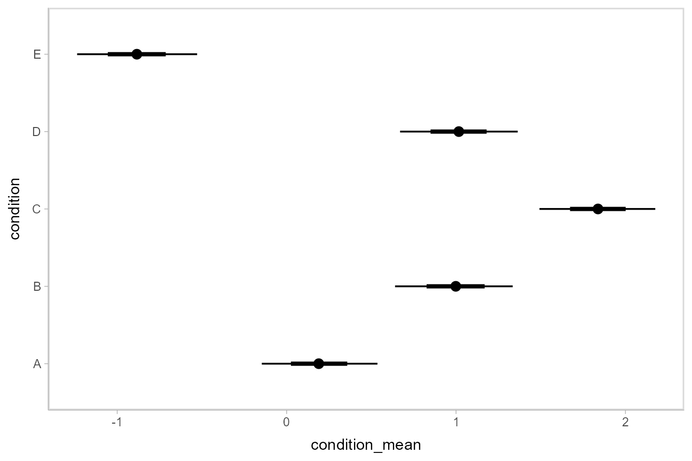
Intervals with densities
To see the density along with the intervals, we can use ggdist::stat_eye() (“eye plots”, which combine intervals with violin plots), or ggdist::stat_halfeye() (interval + density plots):
m %>%
spread_draws(b_Intercept, r_condition[condition,]) %>%
mutate(condition_mean = b_Intercept + r_condition) %>%
ggplot(aes(y = condition, x = condition_mean)) +
stat_halfeye()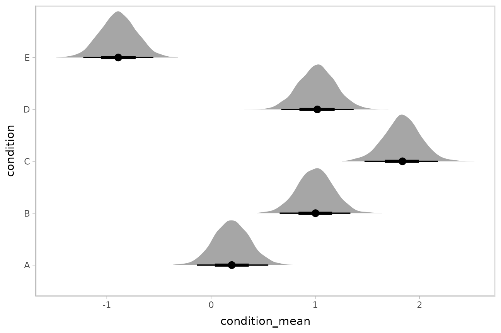
Or say you want to annotate portions of the densities in color; the fill aesthetic can vary within a slab in all geoms and stats in the ggdist::geom_slabinterval() family, including ggdist::stat_halfeye(). For example, if you want to annotate a domain-specific region of practical equivalence (ROPE), you could do something like this:
m %>%
spread_draws(b_Intercept, r_condition[condition,]) %>%
mutate(condition_mean = b_Intercept + r_condition) %>%
ggplot(aes(y = condition, x = condition_mean, fill = stat(abs(x) < .8))) +
stat_halfeye() +
geom_vline(xintercept = c(-.8, .8), linetype = "dashed") +
scale_fill_manual(values = c("gray80", "skyblue"))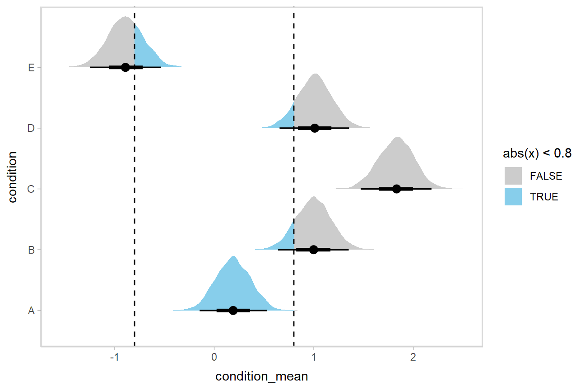
Other visualizations of distributions: stat_slabinterval
There are a variety of additional stats for visualizing distributions in the ggdist::geom_slabinterval() family of stats and geoms:

See vignette("slabinterval", package = "ggdist") for an overview.
Posterior means and predictions
Rather than calculating conditional means manually as in the previous example, we could use add_epred_draws(), which is analogous to brms::posterior_epred() (giving posterior draws from the expectation of the posterior predictive; i.e. posterior distributions of conditional means), but uses a tidy data format. We can combine it with modelr::data_grid() to first generate a grid describing the predictions we want, then transform that grid into a long-format data frame of draws from conditional means:
## # A tibble: 10 x 6
## # Groups: condition, .row [1]
## condition .row .chain .iteration .draw .epred
## <chr> <int> <int> <int> <int> <dbl>
## 1 A 1 NA NA 1 0.406
## 2 A 1 NA NA 2 0.114
## 3 A 1 NA NA 3 0.361
## 4 A 1 NA NA 4 0.282
## 5 A 1 NA NA 5 0.253
## 6 A 1 NA NA 6 0.596
## 7 A 1 NA NA 7 -0.123
## 8 A 1 NA NA 8 0.314
## 9 A 1 NA NA 9 0.264
## 10 A 1 NA NA 10 0.226To plot this example, we’ll also show the use of ggdist::stat_pointinterval() instead of ggdist::geom_pointinterval(), which summarizes draws into points and intervals within ggplot:
ABC %>%
data_grid(condition) %>%
add_epred_draws(m) %>%
ggplot(aes(x = .epred, y = condition)) +
stat_pointinterval(.width = c(.66, .95))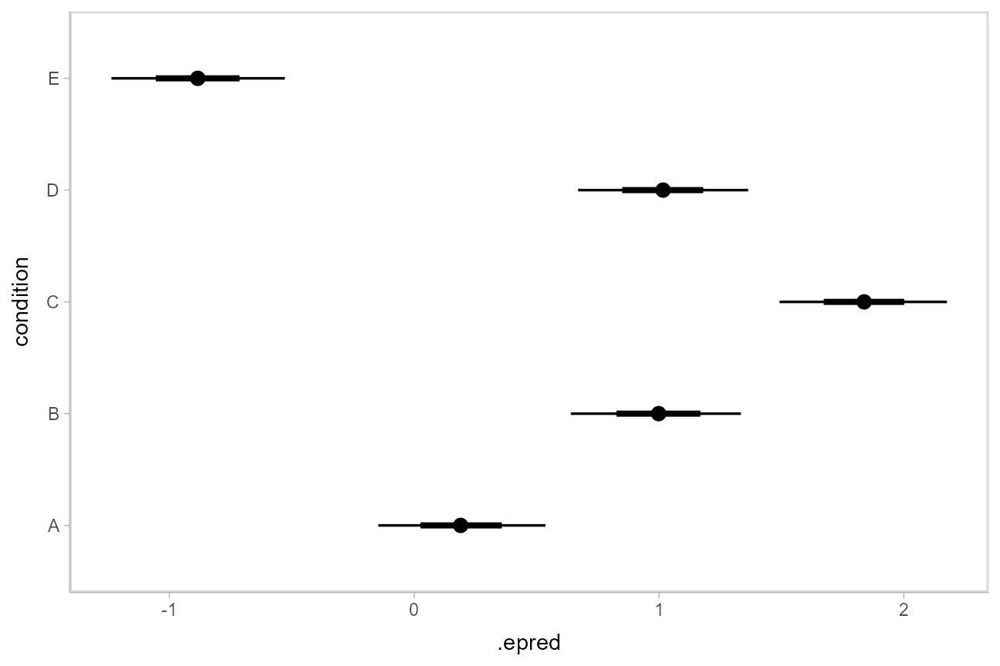
Quantile dotplots
Intervals are nice if the alpha level happens to line up with whatever decision you are trying to make, but getting a shape of the posterior is better (hence eye plots, above). On the other hand, making inferences from density plots is imprecise (estimating the area of one shape as a proportion of another is a hard perceptual task). Reasoning about probability in frequency formats is easier, motivating quantile dotplots (Kay et al. 2016, Fernandes et al. 2018), which also allow precise estimation of arbitrary intervals (down to the dot resolution of the plot, 100 in the example below).
Within the slabinterval family of geoms in tidybayes is the dots and dotsinterval family, which automatically determine appropriate bin sizes for dotplots and can calculate quantiles from samples to construct quantile dotplots. ggdist::stat_dotsinterval() is the variant designed for use on samples:
ABC %>%
data_grid(condition) %>%
add_epred_draws(m) %>%
ggplot(aes(x = .epred, y = condition)) +
stat_dotsinterval(quantiles = 100)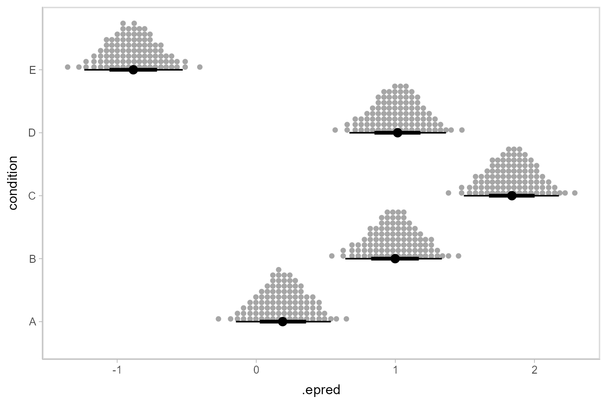
The idea is to get away from thinking about the posterior as indicating one canonical point or interval, but instead to represent it as (say) 100 approximately equally likely points.
Posterior predictions
Where add_epred_draws() is analogous to brms::posterior_epred(), add_predicted_draws() is analogous to brms::posterior_predict(), giving draws from the posterior predictive distribution.
Here is an example of posterior predictive distributions plotted using ggdist::stat_slab():
ABC %>%
data_grid(condition) %>%
add_predicted_draws(m) %>%
ggplot(aes(x = .prediction, y = condition)) +
stat_slab()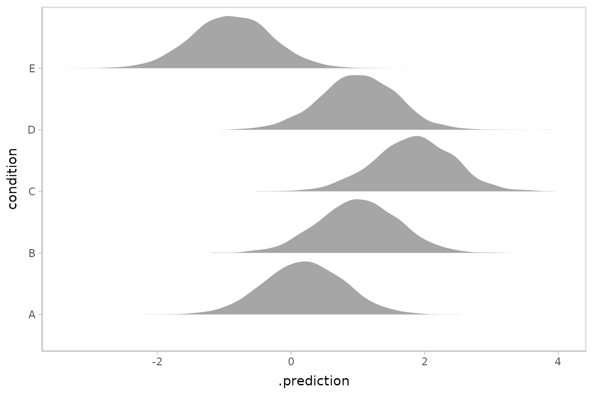
We could also use ggdist::stat_interval() to plot predictive bands alongside the data:
ABC %>%
data_grid(condition) %>%
add_predicted_draws(m) %>%
ggplot(aes(y = condition, x = .prediction)) +
stat_interval(.width = c(.50, .80, .95, .99)) +
geom_point(aes(x = response), data = ABC) +
scale_color_brewer()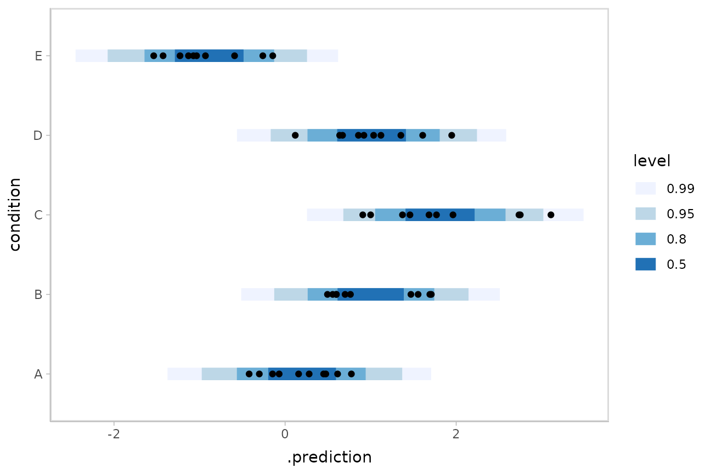
Altogether, data, posterior predictions, and posterior distributions of the means:
grid = ABC %>%
data_grid(condition)
means = grid %>%
add_epred_draws(m)
preds = grid %>%
add_predicted_draws(m)
ABC %>%
ggplot(aes(y = condition, x = response)) +
stat_interval(aes(x = .prediction), data = preds) +
stat_pointinterval(aes(x = .epred), data = means, .width = c(.66, .95), position = position_nudge(y = -0.3)) +
geom_point() +
scale_color_brewer()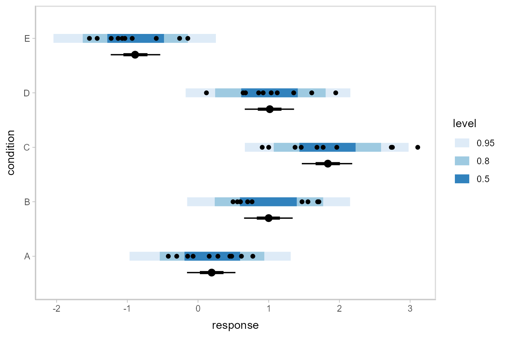
Posterior predictions, Kruschke-style
The above approach to posterior predictions integrates over the parameter uncertainty to give a single posterior predictive distribution. Another approach, often used by John Kruschke in his book Doing Bayesian Data Analysis, is to attempt to show both the predictive uncertainty and the parameter uncertainty simultaneously by showing several possible predictive distributions implied by the posterior.
We can do this pretty easily by asking for the distributional parameters for a given prediction implied by the posterior. We’ll do it explicitly here by setting dpar = c("mu", "sigma") in add_epred_draws(). Rather than specifying the parameters explicitly, you can also just set dpar = TRUE to get draws from all distributional parameters in a model, and this will work for any response distribution supported by brms. Then, we can select a small number of draws using sample_draws() and then use ggdist::stat_dist_slab() to visualize each predictive distribution implied by the values of mu and sigma:
ABC %>%
data_grid(condition) %>%
add_epred_draws(m, dpar = c("mu", "sigma")) %>%
sample_draws(30) %>%
ggplot(aes(y = condition)) +
stat_dist_slab(aes(dist = "norm", arg1 = mu, arg2 = sigma),
slab_color = "gray65", alpha = 1/10, fill = NA
) +
geom_point(aes(x = response), data = ABC, shape = 21, fill = "#9ECAE1", size = 2)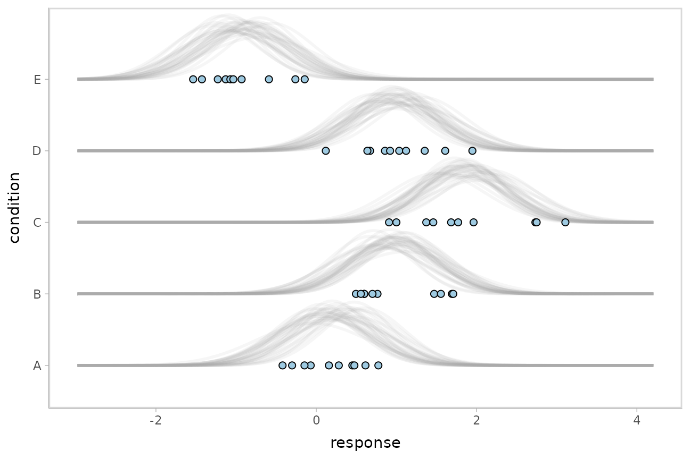
For a more detailed description of these charts (and some useful variations on them), see Solomon Kurz’s excellent blog post on the topic.
We could even combine the Kruschke-style plots of predictive distributions with half-eyes showing the posterior means:
ABC %>%
data_grid(condition) %>%
add_epred_draws(m, dpar = c("mu", "sigma")) %>%
ggplot(aes(x = condition)) +
stat_dist_slab(aes(dist = "norm", arg1 = mu, arg2 = sigma),
slab_color = "gray65", alpha = 1/10, fill = NA, data = . %>% sample_draws(30), scale = .5
) +
stat_halfeye(aes(y = .epred), side = "bottom", scale = .5) +
geom_point(aes(y = response), data = ABC, shape = 21, fill = "#9ECAE1", size = 2, position = position_nudge(x = -.2))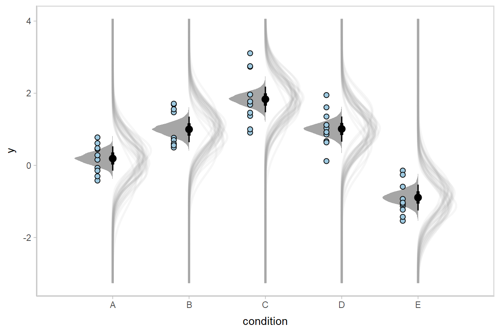
Fit/prediction curves
To demonstrate drawing fit curves with uncertainty, let’s fit a slightly naive model to part of the mtcars dataset:
m_mpg = brm(
mpg ~ hp * cyl,
data = mtcars,
file = "models/tidy-brms_m_mpg.rds" # cache model (can be removed)
)We can draw fit curves with probability bands:
mtcars %>%
group_by(cyl) %>%
data_grid(hp = seq_range(hp, n = 51)) %>%
add_epred_draws(m_mpg) %>%
ggplot(aes(x = hp, y = mpg, color = ordered(cyl))) +
stat_lineribbon(aes(y = .epred)) +
geom_point(data = mtcars) +
scale_fill_brewer(palette = "Greys") +
scale_color_brewer(palette = "Set2")
Or we can sample a reasonable number of fit lines (say 100) and overplot them:
mtcars %>%
group_by(cyl) %>%
data_grid(hp = seq_range(hp, n = 101)) %>%
# NOTE: this shows the use of ndraws to subsample within add_epred_draws()
# ONLY do this IF you are planning to make spaghetti plots, etc.
# NEVER subsample to a small sample to plot intervals, densities, etc.
add_epred_draws(m_mpg, ndraws = 100) %>%
ggplot(aes(x = hp, y = mpg, color = ordered(cyl))) +
geom_line(aes(y = .epred, group = paste(cyl, .draw)), alpha = .1) +
geom_point(data = mtcars) +
scale_color_brewer(palette = "Dark2")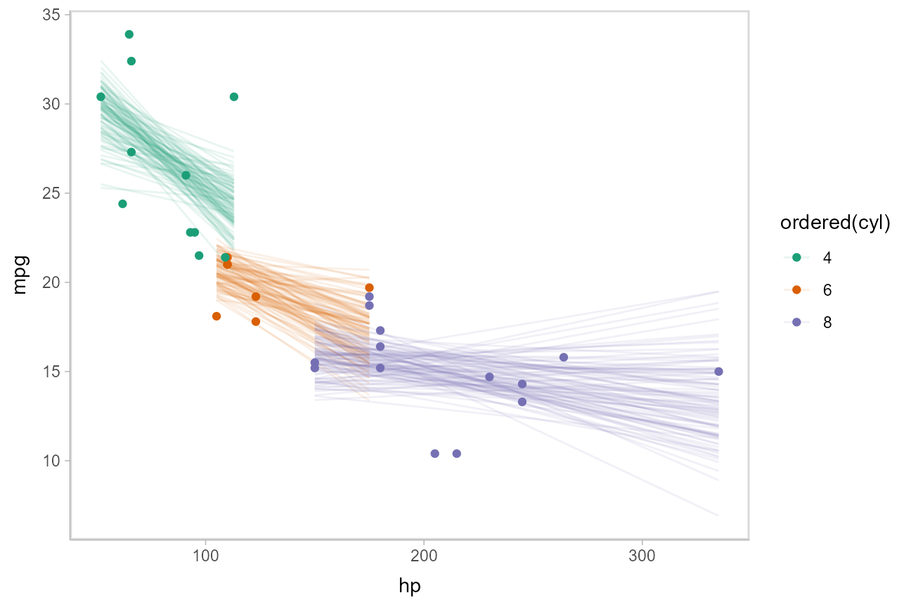
Or we can create animated hypothetical outcome plots (HOPs) of fit lines:
set.seed(123456)
# NOTE: using a small number of draws to keep this example
# small, but in practice you probably want 50 or 100
ndraws = 20
p = mtcars %>%
group_by(cyl) %>%
data_grid(hp = seq_range(hp, n = 101)) %>%
add_epred_draws(m_mpg, ndraws = ndraws) %>%
ggplot(aes(x = hp, y = mpg, color = ordered(cyl))) +
geom_line(aes(y = .epred, group = paste(cyl, .draw))) +
geom_point(data = mtcars) +
scale_color_brewer(palette = "Dark2") +
transition_states(.draw, 0, 1) +
shadow_mark(future = TRUE, color = "gray50", alpha = 1/20)
animate(p, nframes = ndraws, fps = 2.5, width = 432, height = 288, res = 96, dev = "png", type = "cairo")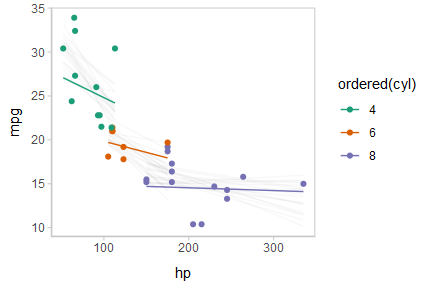
Or we could plot posterior predictions (instead of means). For this example we’ll also use alpha to make it easier to see overlapping bands:
mtcars %>%
group_by(cyl) %>%
data_grid(hp = seq_range(hp, n = 101)) %>%
add_predicted_draws(m_mpg) %>%
ggplot(aes(x = hp, y = mpg, color = ordered(cyl), fill = ordered(cyl))) +
stat_lineribbon(aes(y = .prediction), .width = c(.95, .80, .50), alpha = 1/4) +
geom_point(data = mtcars) +
scale_fill_brewer(palette = "Set2") +
scale_color_brewer(palette = "Dark2")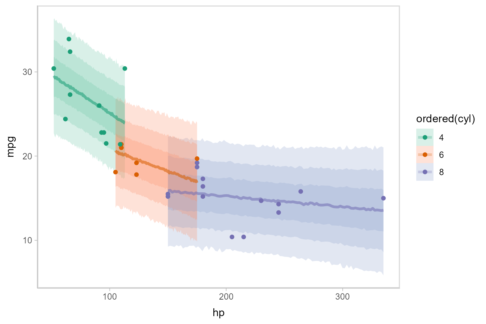
This gets difficult to judge by group, so probably better to facet into multiple plots. Fortunately, since we are using ggplot, that functionality is built in:
mtcars %>%
group_by(cyl) %>%
data_grid(hp = seq_range(hp, n = 101)) %>%
add_predicted_draws(m_mpg) %>%
ggplot(aes(x = hp, y = mpg)) +
stat_lineribbon(aes(y = .prediction), .width = c(.99, .95, .8, .5), color = brewer.pal(5, "Blues")[[5]]) +
geom_point(data = mtcars) +
scale_fill_brewer() +
facet_grid(. ~ cyl, space = "free_x", scales = "free_x")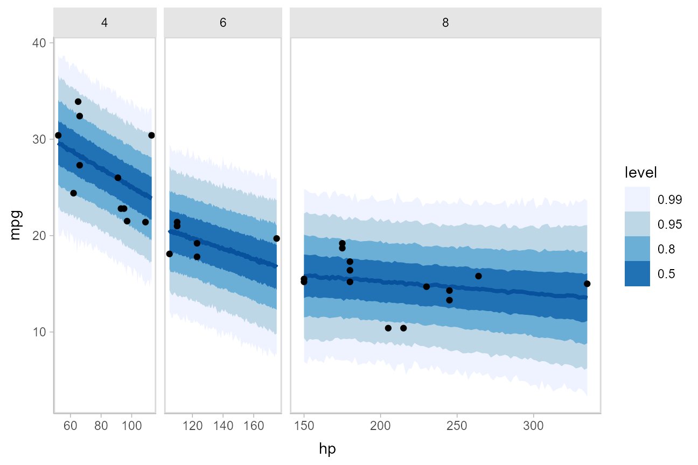
Extracting distributional regression parameters
brms::brm() also allows us to set up submodels for parameters of the response distribution other than the location (e.g., mean). For example, we can allow a variance parameter, such as the standard deviation, to also be some function of the predictors.
This approach can be helpful in cases of non-constant variance (also called heteroskedasticity by folks who like obfuscation via Latin). E.g., imagine two groups, each with different mean response and variance:
set.seed(1234)
AB = tibble(
group = rep(c("a", "b"), each = 20),
response = rnorm(40, mean = rep(c(1, 5), each = 20), sd = rep(c(1, 3), each = 20))
)
AB %>%
ggplot(aes(x = response, y = group)) +
geom_point()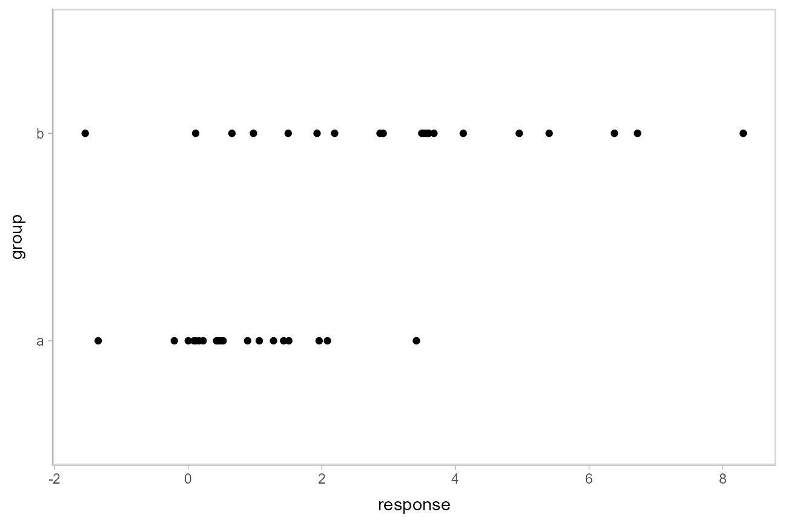
Here is a model that lets the mean and standard deviation of response be dependent on group:
m_ab = brm(
bf(
response ~ group,
sigma ~ group
),
data = AB,
file = "models/tidy-brms_m_ab.rds" # cache model (can be removed)
)We can plot the posterior distribution of the mean response alongside posterior predictive intervals and the data:
grid = AB %>%
data_grid(group)
means = grid %>%
add_epred_draws(m_ab)
preds = grid %>%
add_predicted_draws(m_ab)
AB %>%
ggplot(aes(x = response, y = group)) +
stat_halfeye(aes(x = .epred), scale = 0.6, position = position_nudge(y = 0.175), data = means) +
stat_interval(aes(x = .prediction), data = preds) +
geom_point(data = AB) +
scale_color_brewer()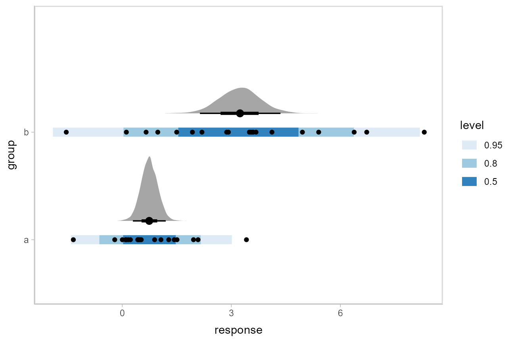
This shows posteriors of the mean of each group (black intervals and the density plots) and posterior predictive intervals (blue).
The predictive intervals in group b are larger than in group a because the model fits a different standard deviation for each group. We can see how the corresponding distributional parameter, sigma, changes by extracting it using the dpar argument to add_epred_draws():
grid %>%
add_epred_draws(m_ab, dpar = TRUE) %>%
ggplot(aes(x = sigma, y = group)) +
stat_halfeye() +
geom_vline(xintercept = 0, linetype = "dashed")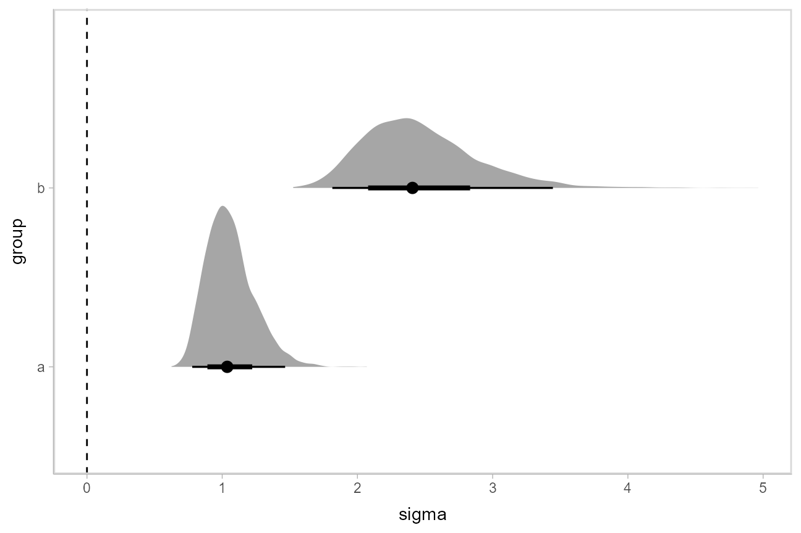
By setting dpar = TRUE, all distributional parameters are added as additional columns in the result of add_epred_draws(); if you only want a specific parameter, you can specify it (or a list of just the parameters you want). In the above model, dpar = TRUE is equivalent to dpar = list("mu", "sigma").
Comparing levels of a factor
If we wish compare the means from each condition, compare_levels() facilitates comparisons of the value of some variable across levels of a factor. By default it computes all pairwise differences.
Let’s demonstrate compare_levels() with ggdist::stat_halfeye(). We’ll also re-order by the mean of the difference:
m %>%
spread_draws(r_condition[condition,]) %>%
compare_levels(r_condition, by = condition) %>%
ungroup() %>%
mutate(condition = reorder(condition, r_condition)) %>%
ggplot(aes(y = condition, x = r_condition)) +
stat_halfeye() +
geom_vline(xintercept = 0, linetype = "dashed") 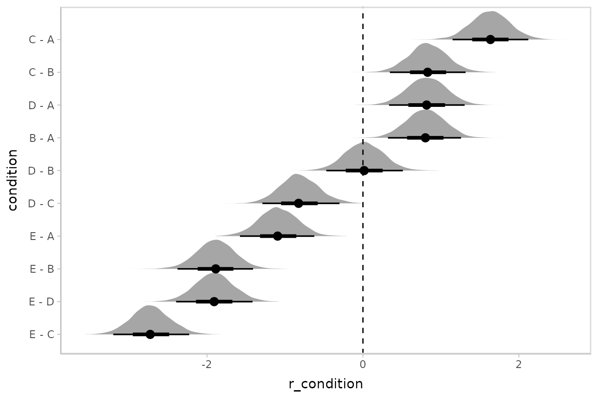
Ordinal models
The posterior_epred() function for ordinal and multinomial regression models in brms returns multiple variables for each draw: one for each outcome category (in contrast to rstanarm::stan_polr() models, which return draws from the latent linear predictor). The philosophy of tidybayes is to tidy whatever format is output by a model, so in keeping with that philosophy, when applied to ordinal and multinomial brms models, add_epred_draws() adds an additional column called .category and a separate row containing the variable for each category is output for every draw and predictor.
Ordinal model with continuous predictor
We’ll fit a model using the mtcars dataset that predicts the number of cylinders in a car given the car’s mileage (in miles per gallon). While this is a little backwards causality-wise (presumably the number of cylinders causes the mileage, if anything), that does not mean this is not a fine prediction task (I could probably tell someone who knows something about cars the MPG of a car and they could do reasonably well at guessing the number of cylinders in the engine).
Before we fit the model, let’s clean the dataset by making the cyl column an ordered factor (by default it is just a number):
## mpg cyl disp hp drat wt qsec vs am gear carb
## Mazda RX4 21.0 6 160 110 3.90 2.620 16.46 0 1 4 4
## Mazda RX4 Wag 21.0 6 160 110 3.90 2.875 17.02 0 1 4 4
## Datsun 710 22.8 4 108 93 3.85 2.320 18.61 1 1 4 1
## Hornet 4 Drive 21.4 6 258 110 3.08 3.215 19.44 1 0 3 1
## Hornet Sportabout 18.7 8 360 175 3.15 3.440 17.02 0 0 3 2
## Valiant 18.1 6 225 105 2.76 3.460 20.22 1 0 3 1Then we’ll fit an ordinal regression model:
m_cyl = brm(
cyl ~ mpg,
data = mtcars_clean,
family = cumulative,
seed = 58393,
file = "models/tidy-brms_m_cyl.rds" # cache model (can be removed)
)add_epred_draws() will include a .category column, and .epred will contain draws from the posterior distribution for the probability that the response is in that category. For example, here is the fit for the first row in the dataset:
tibble(mpg = 21) %>%
add_epred_draws(m_cyl) %>%
median_qi(.epred)## # A tibble: 3 x 9
## mpg .row .category .epred .lower .upper .width .point .interval
## <dbl> <int> <fct> <dbl> <dbl> <dbl> <dbl> <chr> <chr>
## 1 21 1 4 0.346 0.0952 0.710 0.95 median qi
## 2 21 1 6 0.620 0.263 0.892 0.95 median qi
## 3 21 1 8 0.0136 0.000287 0.124 0.95 median qiNote: for the .category variable to retain its original factor level names you must be using brms greater than or equal to version 2.15.9.
We could plot fit lines for predicted probabilities against the dataset:
data_plot = mtcars_clean %>%
ggplot(aes(x = mpg, y = cyl, color = cyl)) +
geom_point() +
scale_color_brewer(palette = "Dark2", name = "cyl")
fit_plot = mtcars_clean %>%
data_grid(mpg = seq_range(mpg, n = 101)) %>%
add_epred_draws(m_cyl, value = "P(cyl | mpg)", category = "cyl") %>%
ggplot(aes(x = mpg, y = `P(cyl | mpg)`, color = cyl)) +
stat_lineribbon(aes(fill = cyl), alpha = 1/5) +
scale_color_brewer(palette = "Dark2") +
scale_fill_brewer(palette = "Dark2")
plot_grid(ncol = 1, align = "v",
data_plot,
fit_plot
)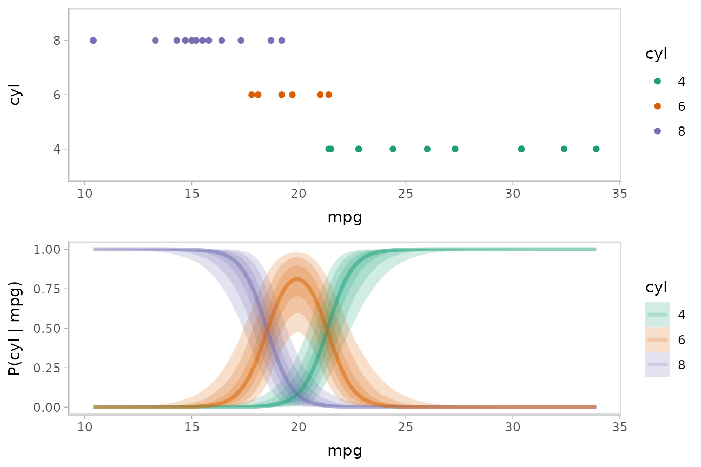
The above display does not let you see the correlation between P(cyl|mpg) for different values of cyl at a particular value of mpg. For example, in the portion of the posterior where P(cyl = 6|mpg = 20) is high, P(cyl = 4|mpg = 20) and P(cyl = 8|mpg = 20) must be low (since these must add up to 1).
One way to see this correlation might be to employ hypothetical outcome plots (HOPs) just for the fit line, “detaching” it from the ribbon (another alternative would be to use HOPs on top of line ensembles, as demonstrated earlier in this document). By employing animation, you can see how the lines move in tandem or opposition to each other, revealing some patterns in how they are correlated:
# NOTE: using a small number of draws to keep this example
# small, but in practice you probably want 50 or 100
ndraws = 20
p = mtcars_clean %>%
data_grid(mpg = seq_range(mpg, n = 101)) %>%
add_epred_draws(m_cyl, value = "P(cyl | mpg)", category = "cyl") %>%
ggplot(aes(x = mpg, y = `P(cyl | mpg)`, color = cyl)) +
# we remove the `.draw` column from the data for stat_lineribbon so that the same ribbons
# are drawn on every frame (since we use .draw to determine the transitions below)
stat_lineribbon(aes(fill = cyl), alpha = 1/5, color = NA, data = . %>% select(-.draw)) +
# we use sample_draws to subsample at the level of geom_line (rather than for the full dataset
# as in previous HOPs examples) because we need the full set of draws for stat_lineribbon above
geom_line(aes(group = paste(.draw, cyl)), size = 1, data = . %>% sample_draws(ndraws)) +
scale_color_brewer(palette = "Dark2") +
scale_fill_brewer(palette = "Dark2") +
transition_manual(.draw)
animate(p, nframes = ndraws, fps = 2.5, width = 576, height = 192, res = 96, dev = "png", type = "cairo")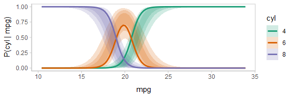
Notice how the lines move together, and how they move up or down together or in opposition. We could take a slice through these lines at an x position in the above chart (say, mpg = 20) and look at the correlation between them using a scatterplot matrix:
tibble(mpg = 20) %>%
add_epred_draws(m_cyl, value = "P(cyl | mpg = 20)", category = "cyl") %>%
ungroup() %>%
select(.draw, cyl, `P(cyl | mpg = 20)`) %>%
gather_pairs(cyl, `P(cyl | mpg = 20)`, triangle = "both") %>%
filter(.row != .col) %>%
ggplot(aes(.x, .y)) +
geom_point(alpha = 1/50) +
facet_grid(.row ~ .col) +
ylab("P(cyl = row | mpg = 20)") +
xlab("P(cyl = col | mpg = 20)")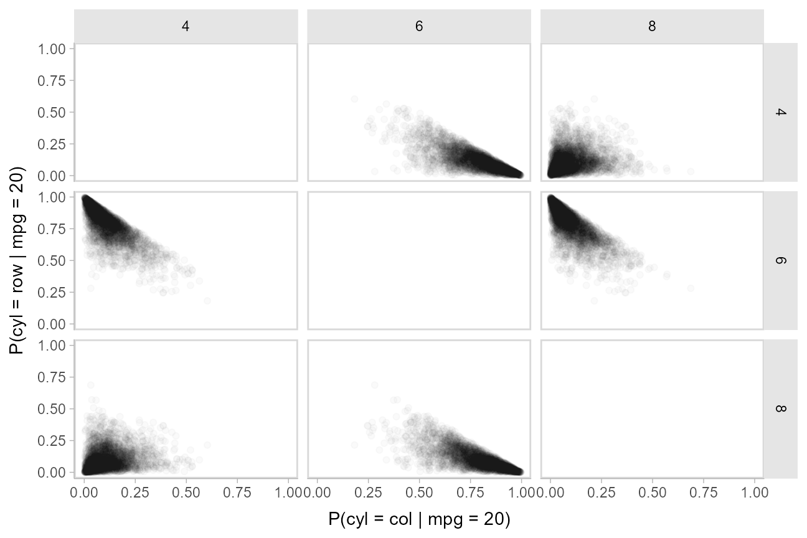
While talking about the mean for an ordinal distribution often does not make sense, in this particular case one could argue that the expected number of cylinders for a car given its miles per gallon is a meaningful quantity. We could plot the posterior distribution for the average number of cylinders for a car given a particular miles per gallon as follows:
\[
\textrm{E}[\textrm{cyl}|\textrm{mpg}=m] = \sum_{c \in \{4,6,8\}} c\cdot \textrm{P}(\textrm{cyl}=c|\textrm{mpg}=m)
\] We can use the above formula to derive a posterior distribution for \(\textrm{E}[\textrm{cyl}|\textrm{mpg}=m]\) from the model. The model gives us a posterior distribution for \(\textrm{P}(\textrm{cyl}=c|\textrm{mpg}=m)\): when mpg = \(m\), the response-scale linear predictor (the .epred column from add_epred_draws()) for cyl (aka .category) = \(c\) is \(\textrm{P}(\textrm{cyl}=c|\textrm{mpg}=m)\). Thus, we can group within .draw and then use summarise to calculate the expected value:
label_data_function = . %>%
ungroup() %>%
filter(mpg == quantile(mpg, .47)) %>%
summarise_if(is.numeric, mean)
data_plot_with_mean = mtcars_clean %>%
data_grid(mpg = seq_range(mpg, n = 101)) %>%
# NOTE: this shows the use of ndraws to subsample within add_epred_draws()
# ONLY do this IF you are planning to make spaghetti plots, etc.
# NEVER subsample to a small sample to plot intervals, densities, etc.
add_epred_draws(m_cyl, value = "P(cyl | mpg)", category = "cyl", ndraws = 100) %>%
group_by(mpg, .draw) %>%
# calculate expected cylinder value
mutate(cyl = as.numeric(as.character(cyl))) %>%
summarise(cyl = sum(cyl * `P(cyl | mpg)`), .groups = "drop") %>%
ggplot(aes(x = mpg, y = cyl)) +
geom_line(aes(group = .draw), alpha = 5/100) +
geom_point(aes(y = as.numeric(as.character(cyl)), fill = cyl), data = mtcars_clean, shape = 21, size = 2) +
geom_text(aes(x = mpg + 4), label = "E[cyl | mpg]", data = label_data_function, hjust = 0) +
geom_segment(aes(yend = cyl, xend = mpg + 3.9), data = label_data_function) +
scale_fill_brewer(palette = "Set2", name = "cyl")
plot_grid(ncol = 1, align = "v",
data_plot_with_mean,
fit_plot
)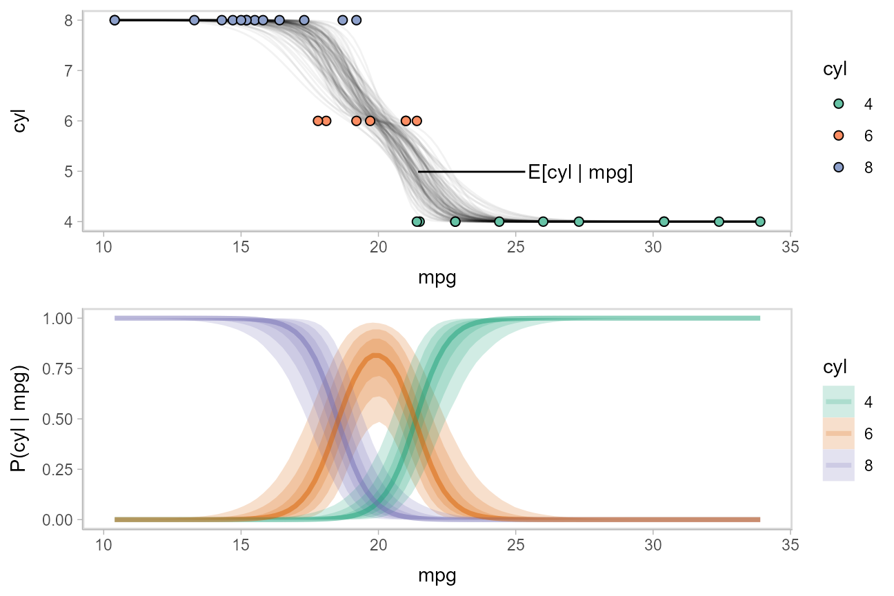
Now let’s do some posterior predictive checking: do posterior predictions look like the data? For this, we’ll make new predictions at the same values of mpg as were present in the original dataset (gray circles) and plot these with the observed data (colored circles):
mtcars_clean %>%
# we use `select` instead of `data_grid` here because we want to make posterior predictions
# for exactly the same set of observations we have in the original data
select(mpg) %>%
add_predicted_draws(m_cyl, seed = 1234) %>%
# recover original factor labels
mutate(cyl = levels(mtcars_clean$cyl)[.prediction]) %>%
ggplot(aes(x = mpg, y = cyl)) +
geom_count(color = "gray75") +
geom_point(aes(fill = cyl), data = mtcars_clean, shape = 21, size = 2) +
scale_fill_brewer(palette = "Dark2") +
geom_label_repel(
data = . %>% ungroup() %>% filter(cyl == "8") %>% filter(mpg == max(mpg)) %>% dplyr::slice(1),
label = "posterior predictions", xlim = c(26, NA), ylim = c(NA, 2.8), point.padding = 0.3,
label.size = NA, color = "gray50", segment.color = "gray75"
) +
geom_label_repel(
data = mtcars_clean %>% filter(cyl == "6") %>% filter(mpg == max(mpg)) %>% dplyr::slice(1),
label = "observed data", xlim = c(26, NA), ylim = c(2.2, NA), point.padding = 0.2,
label.size = NA, segment.color = "gray35"
)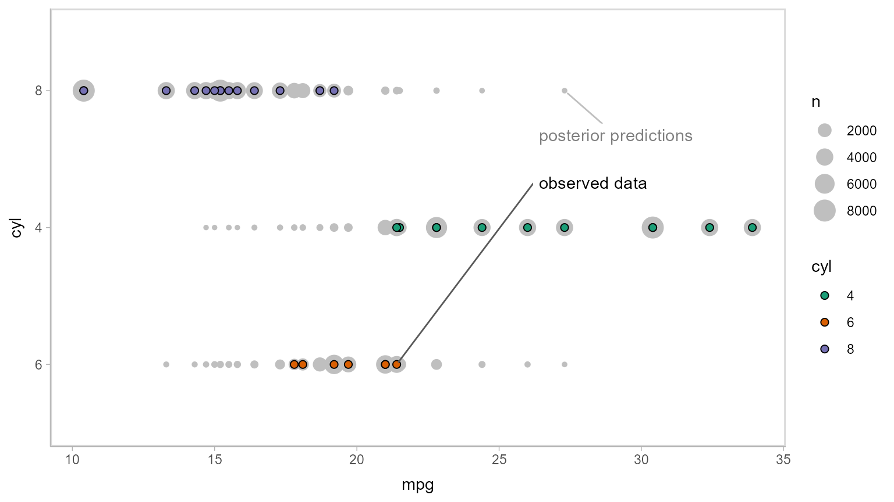
This looks pretty good. Let’s check using another typical posterior predictive checking plot: many simulated distributions of the response (cyl) against the observed distribution of the response. For a continuous response variable this is usually done with a density plot; here, we’ll plot the number of posterior predictions in each bin as a line plot, since the response variable is discrete:
mtcars_clean %>%
select(mpg) %>%
add_predicted_draws(m_cyl, ndraws = 100, seed = 12345) %>%
# recover original factor labels
mutate(cyl = levels(mtcars_clean$cyl)[.prediction]) %>%
ggplot(aes(x = cyl)) +
stat_count(aes(group = NA), geom = "line", data = mtcars_clean, color = "red", size = 3, alpha = .5) +
stat_count(aes(group = .draw), geom = "line", position = "identity", alpha = .05) +
geom_label(data = data.frame(cyl = "4"), y = 9.5, label = "posterior\npredictions",
hjust = 1, color = "gray50", lineheight = 1, label.size = NA) +
geom_label(data = data.frame(cyl = "8"), y = 14, label = "observed\ndata",
hjust = 0, color = "red", lineheight = 1, label.size = NA)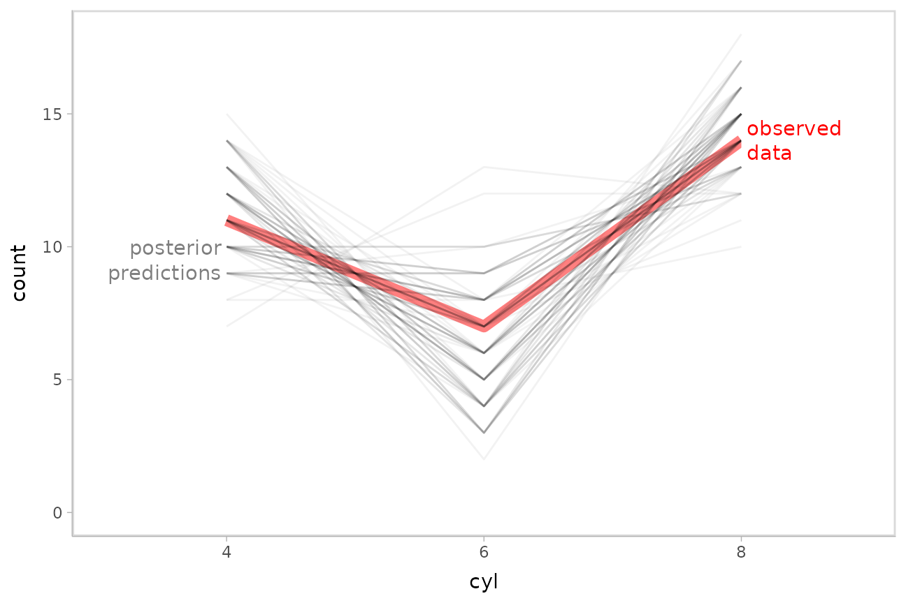
This also looks good.
Another way to look at these posterior predictions might be as a scatterplot matrix. gather_pairs() makes it easy to generate long-format data frames suitable for creating custom scatterplot matrices (or really, arbitrary matrix-style small multiples plots) in ggplot using ggplot2::facet_grid():
set.seed(12345)
mtcars_clean %>%
select(mpg) %>%
add_predicted_draws(m_cyl) %>%
# recover original factor labels. Must ungroup first so that the
# factor is created in the same way in all groups; this is a workaround
# because brms no longer returns labelled predictions (hopefully that
# is fixed then this will no longer be necessary)
ungroup() %>%
mutate(cyl = factor(levels(mtcars_clean$cyl)[.prediction])) %>%
# need .drop = FALSE to ensure 0 counts are not dropped
group_by(.draw, .drop = FALSE) %>%
count(cyl) %>%
gather_pairs(cyl, n) %>%
ggplot(aes(.x, .y)) +
geom_count(color = "gray75") +
geom_point(data = mtcars_clean %>% count(cyl) %>% gather_pairs(cyl, n), color = "red") +
facet_grid(vars(.row), vars(.col)) +
xlab("Number of observations with cyl = col") +
ylab("Number of observations with cyl = row") 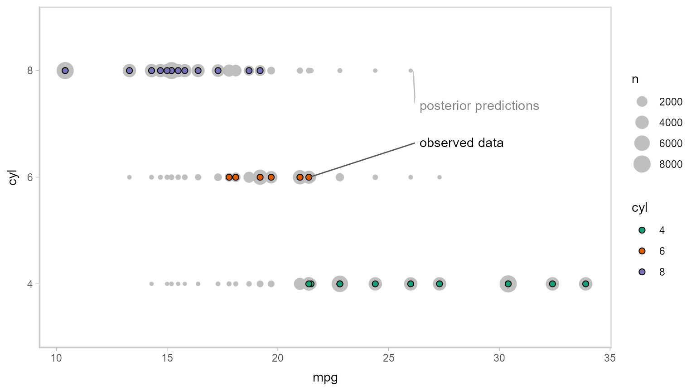
Ordinal model with categorical predictor
Here’s an ordinal model with a categorical predictor:
data(esoph)
m_esoph_brm = brm(
tobgp ~ agegp,
data = esoph,
family = cumulative(),
file = "models/tidy-brms_m_esoph_brm.rds"
)Then we can plot predicted probabilities for each outcome category within each level of the predictor:
esoph %>%
data_grid(agegp) %>%
add_epred_draws(m_esoph_brm, dpar = TRUE, category = "tobgp") %>%
ggplot(aes(x = agegp, y = .epred, color = tobgp)) +
stat_pointinterval(position = position_dodge(width = .4)) +
scale_size_continuous(guide = "none") +
scale_color_manual(values = brewer.pal(6, "Blues")[-c(1,2)])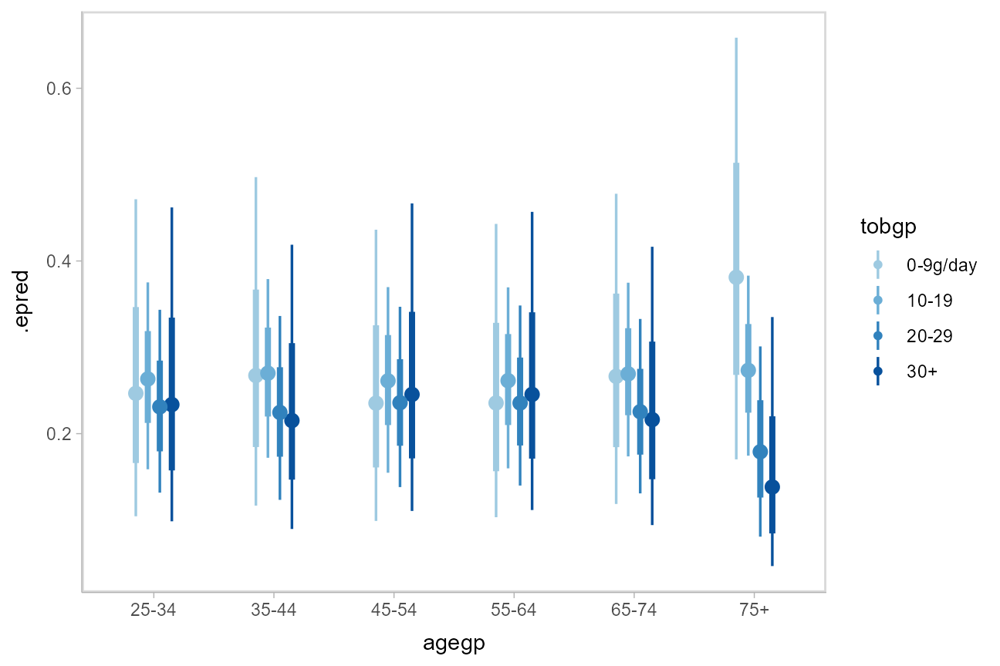
It is hard to see the changes in categories in the above plot; let’s try something that gives a better gist of the distribution within each year:
esoph_plot = esoph %>%
data_grid(agegp) %>%
add_epred_draws(m_esoph_brm, category = "tobgp") %>%
ggplot(aes(x = .epred, y = tobgp)) +
coord_cartesian(expand = FALSE) +
facet_grid(. ~ agegp, switch = "x") +
theme_classic() +
theme(strip.background = element_blank(), strip.placement = "outside") +
ggtitle("P(tobacco consumption category | age group)") +
xlab("age group")
esoph_plot +
stat_summary(fun = median, geom = "bar", fill = "gray65", width = 1, color = "white") +
stat_pointinterval()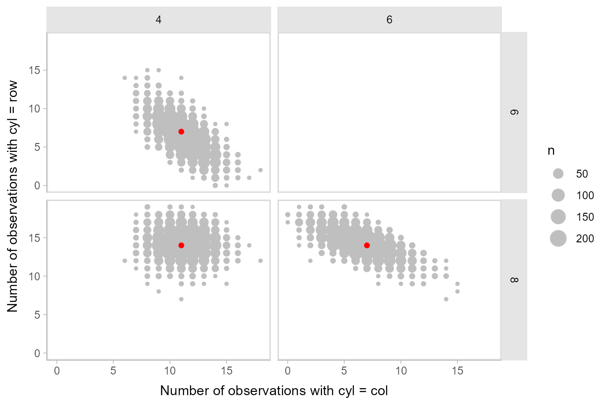
The bars in this case might present a false sense of precision, so we could also try CCDF barplots instead:
esoph_plot +
stat_ccdfinterval() +
expand_limits(x = 0) #ensure bars go to 0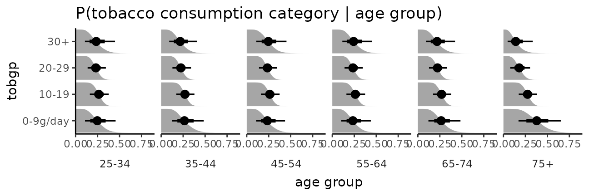
This output should be very similar to the output from the corresponding m_esoph_rs model in vignette("tidy-rstanarm") (modulo different priors), though brms does more of the work for us to produce it than rstanarm does.